容器指令
查看容器
docker ps
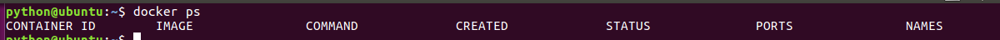
注意：
管理docker容器可以通过名称，也可以通过ID
ps是显示正在运行的容器， -a是显示所有运行过的容器，包括已经不运行的容器
启动容器
守护进程方式启动容器
docker run [参数] docker_image [执行的命令]
让Docker容器在后台以守护形式运行。此时可以通过添加-d参数来实现
docker run -d nginx
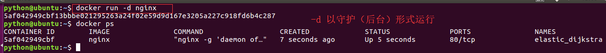-t选项让Docker分配一个伪终端并绑定到容器的标准输入上，-i则让容器的标准输入保持打开
docker run -i -t nginx /bin/bash
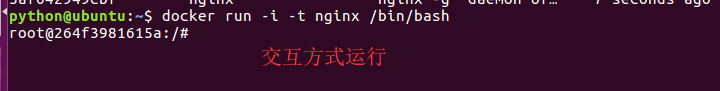
--name选项来给容器设置一个名字
docker run --name myubuntu -dit ubuntu
启动已终止的容器
在生产过程中，常常会出现运行和不运行的容器，我们使用 start 命令开起一个已关闭的容器
docker start [container_id]
关闭容器
在生产中，我们会以为临时情况，要关闭某些容器，我们使用 stop 命令来关闭某个容器
docker stop [container_id]
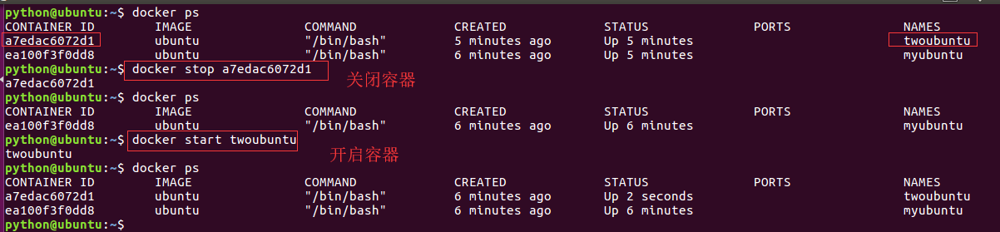
删除容器
删除容器有两种方法：
正常删除 -- 删除已关闭的
强制删除 -- 删除正在运行的
正常删除容器
docker rm [container_id]
强制删除运行容器
docker rm -f [container_id]
拓展批量关闭容器
docker rm -f $(docker ps -a -q)
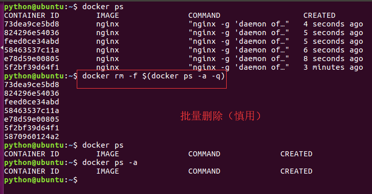
进入正在运行的容器
docker exec [选项] 容器id/容器名 命令
只用-i参数时，由于没有分配伪终端，界面没有我们熟悉的 Linux 命令提示符，但命令执行结果仍然可以返回。
当-i-t参数一起使用时，则可以看到我们熟悉的 Linux 命令提示符
docker exec -it myubuntu /bin/bash
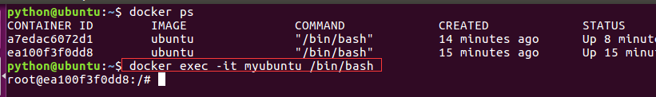
exit退出容器，不会导致容器的停止
基于容器创建镜像
docker commit -m '改动信息' -a "作者信息" container_id new_image:tag
命令演示：
进入一个容器，创建文件后并退出
docker exec -it myubuntu /bin/bash
root@ea100f3f0dd8:/# mkdir itcast
root@ea100f3f0dd8:/# touch itcast.txt
root@ea100f3f0dd8:/# ls
bin boot dev etc home itcast itcast.txt lib lib64 media mnt opt tmp usr var
root@ea100f3f0dd8:/# exit
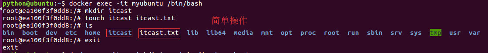
创建一个镜像
docker commit -m 'mkdir' -a 'qiruihua' myubuntu newubuntu:latest
查看镜像
docker images
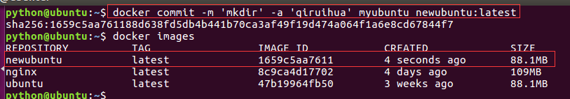
启动一个容器
docker run -it newubuntu
进入容器进行查看
ls
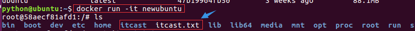
查看容器详细信息
docker inspect [容器id]
查看容器全部信息
docker inspect 5f2bf39d64f1
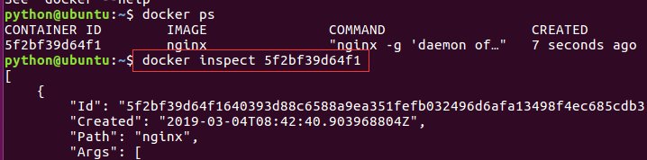
查看容器运行日志
docker logs [容器id]
命令效果：
docker logs 5f2bf39d64f1
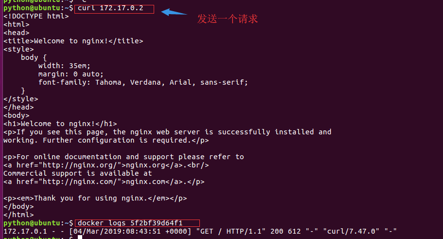